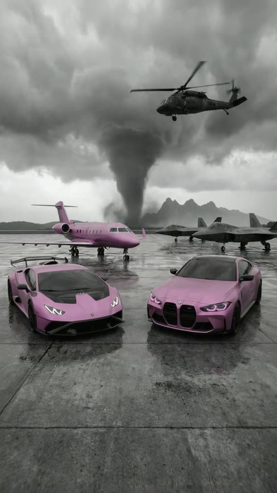
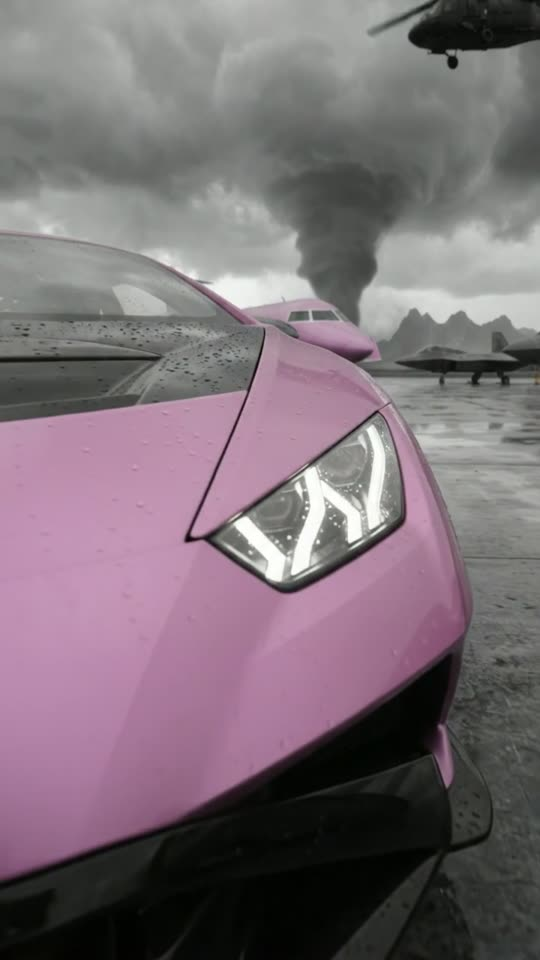
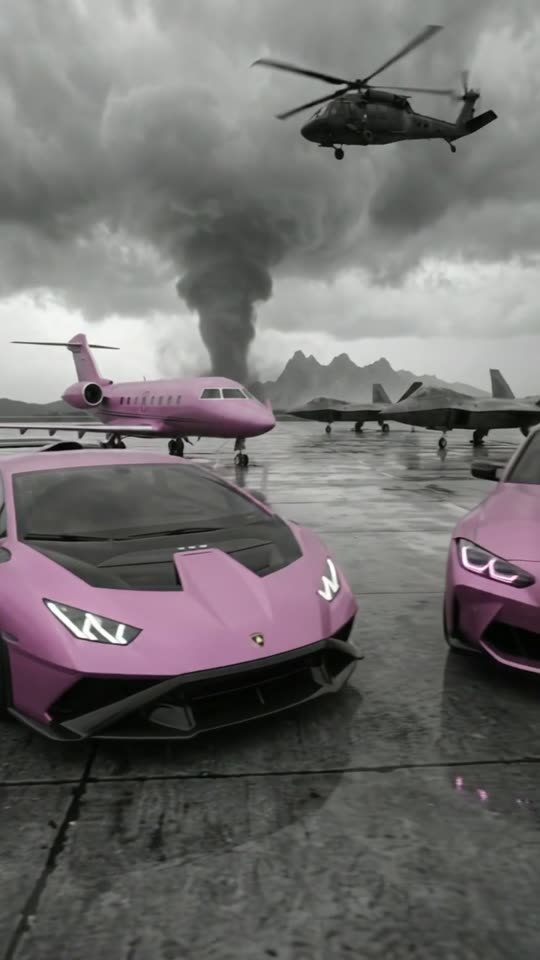
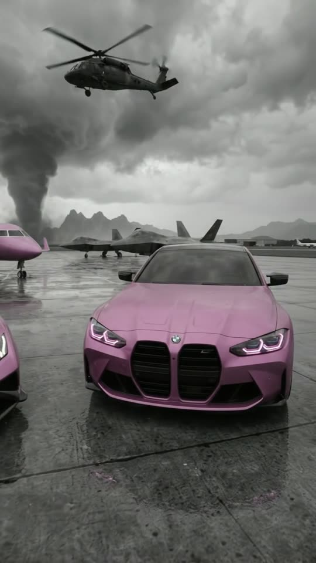

Free prompt pack
Two cars.One tornado.
Nobody parked two pink supercars in front of a tornado. One still image and one prompt that walks the camera around them, second by second.
Every prompt, in the order I ran them. Spray them pink. Tap the storm.
The first frame
The world is grey. The pink is not. This image is frame one: both cars side by side facing you, the jet and the fighter jets behind, a helicopter above and the tornado on the horizon, everything in black and white except the pink.
Watch out
The wide-angle words can put the whole photo inside a black fisheye circle. If yours comes out like that, the fix is the next step.

The prompt 140 words
Low wide-angle photo taken at hip height on a wet airport apron under a violent storm. Four metres away, two cars stand side by side facing the camera, both in satin orchid pink: on the left a Lamborghini Huracán with its sharp white Y-shaped headlights and black vented bonnet; on the right a BMW M4 coupe with its huge black vertical kidney grille and pink-violet glowing headlight rings. Right behind them sits a pink private jet with a T-tail; two dark grey stealth fighter jets stand on the right, and a black helicopter hovers above. On the horizon a giant dark tornado funnel rises over jagged mountains. The whole scene is black and white, wet grey asphalt and grey sky, and only the pink cars and the pink jet keep their colour. Slight barrel distortion at the edges, real photo.
Black circle?
Fill the corners, keep the rest. If your image comes out inside a round black border, edit it with this before you make the video. Feed the video the clean one, or it inherits the circle.
The prompt 98 words
Edit this photo into a normal full-frame photo. Where the round black border is now, extend the scene into all four corners: more grey storm clouds in the top corners, more of the black helicopter's sky at the top right, more wet grey asphalt with reflections in the bottom corners, so the picture fills the whole frame edge to edge with clean, bright corners and a natural, straight perspective. Keep the pink Lamborghini, the pink BMW, the pink jet, the fighter jets, the helicopter, the tornado, the mountains, the black-and-white look and the pink exactly as they are.
The take
Ten seconds, written second by second. Add the clean image as the reference, set 10 s, 9:16, 720p and audio on, and paste the prompt whole.
- 0–1.5 stwo slow steps toward the Lamborghini
- 1.5–3.5 sdown to its headlight
- 3.5–5.5 saround its corner, lightning on the glass
- 5.5–7.5 sacross to the BMW's grille
- 7.5–10 sback to where it started
Watch out
The camera is the only thing that moves. Park the cars, keep the tornado on the horizon and never let a car fill the whole frame.
Fragments



The prompt 1363 words
FORMAT Real handheld walkaround video with a wide 24 mm lens, seen as the finished exported video file: the full picture edge to edge, with clean corners and nothing on top of it. The person filming walks a loop in front of two parked cars and is never seen: no body, no hands, no shadow, no reflection of them in the paint. One continuous take in real time, no cuts. Vertical frame. The video runs at 24 fps. No frame is repeated. Real time, 1x speed, never slow motion. SCENE On a wet airport apron under a violent storm, two pink cars are parked side by side in front of a pink private jet, while a giant tornado turns on the horizon, a black helicopter hovers overhead and lightning flickers far away. The whole world is black and white; only the pink cars and the pink jet keep their colour. The camera walks in to the Lamborghini's headlight, circles its front corner, crosses to the BMW's grille and steps back to where it started. Nothing else happens: the cars never move. The take ends on the same wide view of both cars as the first frame. EXACTLY TWO CARS, ONE JET, TWO FIGHTER JETS, ONE HELICOPTER, ONE TORNADO. REFERENCE IMAGE Use it for the two cars, the jet, the fighter jets, the helicopter, the tornado, the mountains, the wet apron, the black-and-white world and the pink. Everything matches it exactly, zero drift, no smoothing. The camera path is described below. The video fills the whole frame edge to edge. THE CARS Frame-left: a Lamborghini Huracán in satin orchid pink, sharp white Y-shaped LED headlights, a black vented bonnet, a low black front splitter and a tall black rear wing. Frame-right: a BMW M4 coupe in the same satin orchid pink with its huge black vertical kidney grille and pink-violet glowing headlight rings. Both are real cars with real paint: soft reflections of the grey sky slide across their curves as the camera moves, raindrops bead on the paint. They are parked, engines off except for the lit headlights, and never move. Their badges stay exactly as in the reference image, small and sharp; no number plates and no other letters anywhere on them. THE SKY AND THE AIRFIELD Behind the Lamborghini: a pink private jet with a T-tail, parked, its nose pointing toward frame-right. Frame-right behind the BMW: two dark grey stealth fighter jets, parked. High above the fighter jets, at frame-right: one black military helicopter hovering in place, its rotor a soft blur, drifting a metre or two at most. On the horizon, far beyond the airfield: a giant dark grey tornado funnel over jagged mountains, turning slowly; it stays on the horizon the whole take and never comes closer. Low, heavy grey storm clouds. LOCATION MAP The two cars sit nose-to-camera on wet grey asphalt, two metres apart, the Lamborghini frame-left, the BMW frame-right. The jet is six metres behind them. The camera starts five metres in front of the gap between the two cars, at hip height. It walks only in front of the cars, on their front side, and never goes behind them or between them and the jet. FIRST FRAME Already moving: the Lamborghini at x 3-46%, y 53-66%; the BMW at x 54-97%, y 53-66%; the pink jet behind the Lamborghini at x 0-55%, y 40-50%; the two fighter jets at x 57-100%, y 43-50%; the helicopter at x 52-90%, y 9-15%; the tornado funnel at x 38-58%, y 15-48%, the jagged mountains at its right; wet asphalt in the bottom third. Instant read: two pink cars waiting out the end of the world. No delayed reveal. OPTICS Wide 24 mm lens at hip height: natural perspective, straight horizon, deep focus from the paint to the tornado. The picture fills the whole frame edge to edge with clean, bright corners: no fisheye circle, no round black border, no dark vignette, no barrel distortion. Closest distance to any car: sixty centimetres, so a car never fills the whole frame. CAMERA One handheld walk at a calm pace with a natural slight bob, always at hip height or lower. It never flies up like a drone, never orbits behind the cars, never zooms, never whip-pans, never cuts. The tornado stays on the horizon and the two cars stay parked in the same place from the first second to the last. ACTION TIMING 0–1.5 s — Wide, low view of both cars; the camera takes two slow steps forward toward the Lamborghini. Far away, just left of the tornado, a thin lightning bolt flickers for a few frames. 1.5–3.5 s — It walks up to the Lamborghini's front corner and lowers to its headlight, sixty centimetres away: the white Y-shaped light fills the right half of the frame, the pink bonnet curving away, the jet's nose above it. 3.5–5.5 s — It steps left and circles the Lamborghini's front-left corner, low, looking up along its flank: the pink jet's wing above it and the black helicopter hovering high at frame-right. At 4.5 s a distant lightning bolt; its reflection streaks across the Lamborghini's windscreen. 5.5–7.5 s — It swings right, walking past the two noses, and crouches square in front of the BMW, one metre away: the huge black kidney grille in the middle of the frame, the pink-violet headlight rings glowing, the fighter jets behind. 7.5–10 s — It stands up and steps back to the starting spot: both cars side by side, the jet behind, the helicopter above, the tornado turning on the horizon. At 8.5 s a distant lightning bolt behind the tornado. Hold to the last frame. PHYSICS AND SCALE The cars are heavy and parked: they never roll, rock or turn their wheels. The helicopter hovers, it never lands, climbs away or crashes. The tornado is kilometres away and huge: it never moves toward the airfield and never throws debris here. Rain is fine and light; puddles on the asphalt reflect the pink cars. Every lightning bolt is thin and far away, lasting a few frames; thunder follows a second later. Nothing morphs. LIGHTING Flat, dark storm light from the grey sky: soft reflections on the paint, the only bright points are the cars' headlights. When lightning flickers, the sky turns faintly blue-white for a few frames and the windscreens catch it; the frame never goes white. AUDIO No music, no score, no narration, no subtitles. Storm outdoors: strong wind buffeting the mic, a deep distant roar from the tornado, the steady thump of the helicopter's rotor overhead, footsteps on wet asphalt, light rain ticking on the cars, thunder rolling a second after each lightning flicker. Nobody speaks. LOOK Real handheld footage, seen as the finished exported file: crisp detail, wet surfaces, natural wide perspective, clean corners, a little noise in the shadows. Selective colour: the whole picture is black and white, neutral grey, and only the pink of the two cars and the jet keeps its colour, a rich satin orchid pink. The headlights glow white and pink-violet. No other colour anywhere. No film grain, no lens flare, no slow motion, no cuts. No camera app interface: no shutter button, no gallery thumbnail, no record button, no icons, no timer, no recording dot, no frame lines. NO FULL-FRAME EVENTS At every moment the grey sky, the wet asphalt and the edge of at least one car are visible. The frame is never filled by pink paint, rain, cloud or a lightning flash. No flash, no whiteout, no fade, no blur used as a transition. POSITIVE LOCKS Exactly two cars, one jet, two fighter jets, one helicopter and one tornado, the same in every frame; no people anywhere. The cars stay parked and the tornado stays on the horizon. The world stays black and white except the pink. The car badges stay as in the reference; no number plates, no captions, no subtitles, no on-screen text, no watermark, no other letters or numbers anywhere, no camera interface, nothing on top of the picture. TWO PINK CARS. ONE PINK JET. ONE TORNADO. ONE HANDHELD WALK. NO FISHEYE. NO CUTS. NO PLATES. NO SLOW MOTION. NO MUSIC.
Rule 01
One thing moves
Here it's the camera. The cars, the jet and the tornado stay put, so the walk has all the attention.
Rule 02
Grey in the image
Put the black and white in the image, not only in the prompt. The video copies the look it's given.
Rule 03
Lightning far away
Thin bolts behind the tornado, a few frames each. A white flash across the frame is a cut waiting to happen.
That's the whole build
Now go paintyour storm pink.
If yours works, send it over. I read every DM and the good ones end up on the account.
@martiiifons